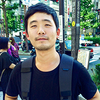

D. Yoo, I. S. Kweon,
Learning Loss for Active Learning,
International Conference on Computer Vision and Pattern Recognition (CVPR), 2019.
Accepted
|  |
Co-founder & research scientist at Lunit, |
I received my BS in 2011 and MS in 2013 at Electrical Engineering, KAIST. From 2013, I am a PhD student at KAIST, working on visual representation learning with Prof. In So Kweon, but I decided to take some time off to join Lunit in 2017. As a full-time research scientist at Lunit, I am devoted to developing advanced AI for medical image analysis and interpretation via cutting-edge deep learning technology. During my internship experience at Adobe Research in the US, I worked on large-scale video representation learning. My research interests include visual recognition problems with deep learning approaches.
Machine Learning |
Deep learning, un/semi-supervised learning, representation learning, active learning, domain adaptation, large-scale learning method. |
Computer Vision |
Visual recognition, image classification, object detection, semantic segmentation, image retrieval, medical image analysis, digital imaging biomarker (DIB). |
Mar. 2017. |
Our transfer learning method, Multi-Scale Pyramid Pooling (MPP), was employed to Samsung Galaxy S8 Bixby Vision for fine-grained object classification and product retrieval. |
Dec. 2015. |
ImageNet Large Scale Visual Recognition Challenge (ILSVRC) |
Feb. 2009. |
Grand Prize in KAIST Undergraduate Research Program. |
D. Yoo, I. S. Kweon,
Learning Loss for Active Learning,
International Conference on Computer Vision and Pattern Recognition (CVPR), 2019.
Accepted

J. Park, J.-Y. Lee, D. Yoo, I. S. Kweon,
Distort-and-Recover: Color Enhancement using Deep Reinforcement Learning,
International Conference on Computer Vision and Pattern Recognition (CVPR), 2018.
Paper | Supp | Code

D. Kim, D. Cho, D. Yoo, I. S. Kweon,
Learning Image Representations by Completing Damaged Jigsaw Puzzles,
Winter Conference on Applications of Computer Vision (WACV), 2018.
Paper

D. Kim, D. Cho, D. Yoo, I. S. Kweon,
Two-Phase Learning for Weakly Supervised Object Localization,
IEEE International Conference on Computer Vision (ICCV), 2017.
Paper
D. Yoo, S. Park, K. Paeng, J.-Y. Lee, I. S. Kweon,
Action-Driven Object Detection with Top-Down Visual Attentions,
arXiv preprint, 2016.
Paper | Video -
person,
multi
D. Yoo, N. Kim, S. Park, A. S. Paek, I. S. Kweon,
Pixel-Level Domain Transfer,
European Conference on Computer Vision (ECCV), 2016.
Paper | Supp |
LookBook dataset |
Code written by Fei Xia
(Also invited to TASK-CV)
D. Yoo, S. Park, J.-Y. Lee, A. S. Paek, I. S. Kweon,
AttentionNet: Aggregating Weak Directions for Accurate Object Detection,
IEEE International Conference on Computer Vision (ICCV), 2015.
Paper | Supp
Y. Yoon, H.-G. Jeon, D. Yoo, J.-Y. Lee, I. S. Kweon,
Learning a Deep Convolutional Network for Light-Field Image Super-Resolution,
IEEE International Conference on Computer Vision (ICCV) - CPCV Workshop, 2015.
Paper
D. Yoo, S. Park, J.-Y. Lee, I. S. Kweon,
Multi-scale Pyramid Pooling for Deep Convolutional Representation,
International Conference on Computer Vision and Pattern Recognition (CVPR) - DeepVision Workshop, 2014.
Paper | Supp
(Employed to Samsung Galaxy S8 Bixby Vision)
D. Yoo, K. Paeng, S. Park,J. Lee, S. Paek, S.-E. Yoon, I. S. Kweon,
PRISM: A System for Weighted Multi-Color Browsing of Fashion Products,
International World Wide Web Conference Companion (WWW), 2014.
Paper